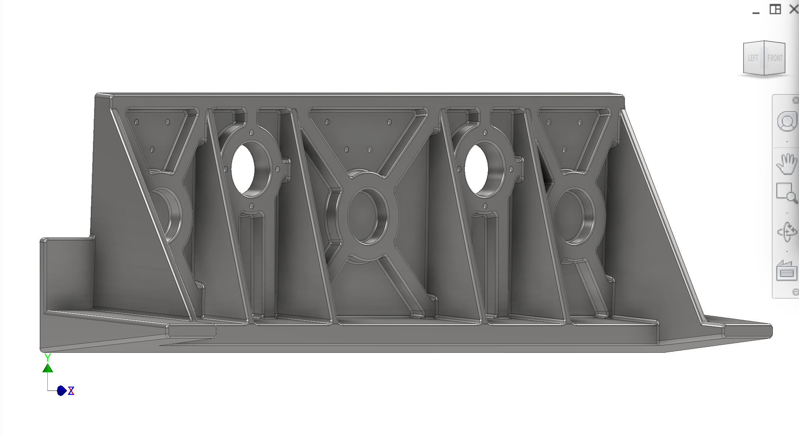
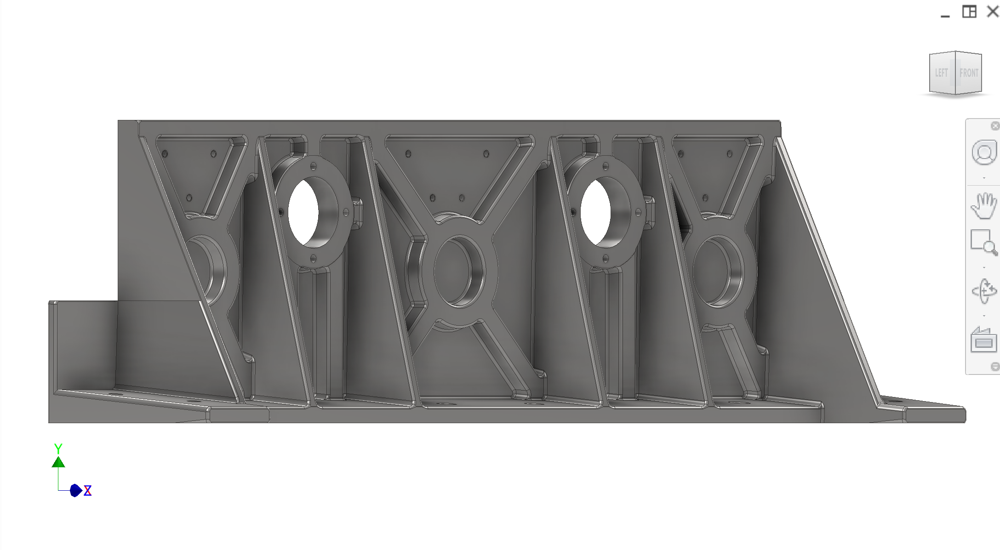
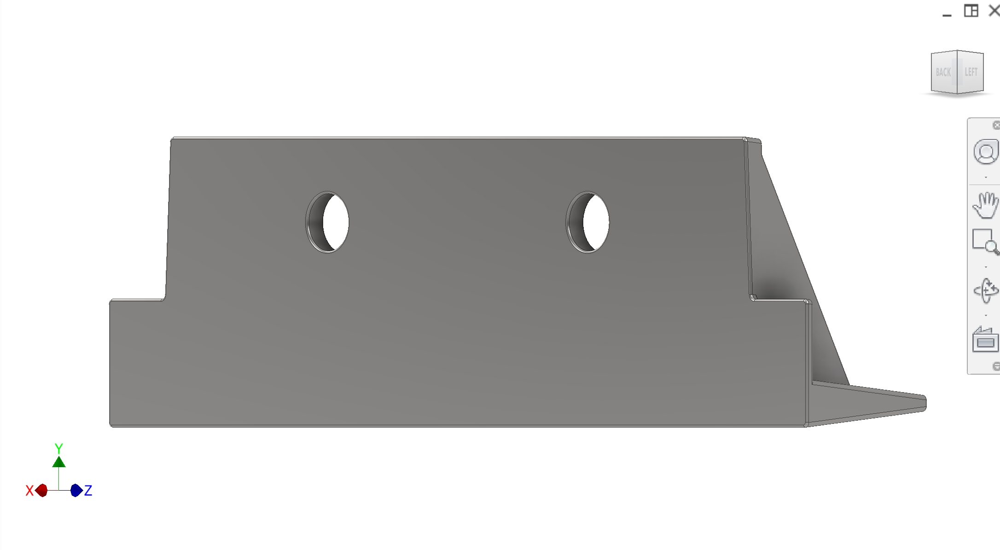
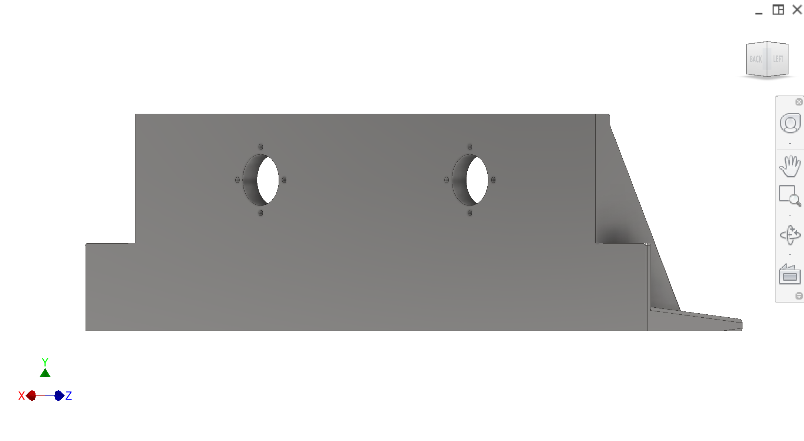
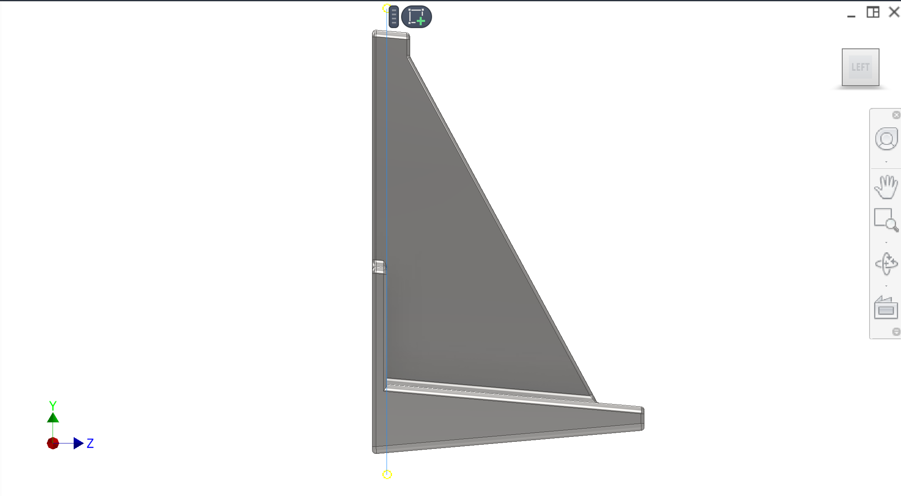
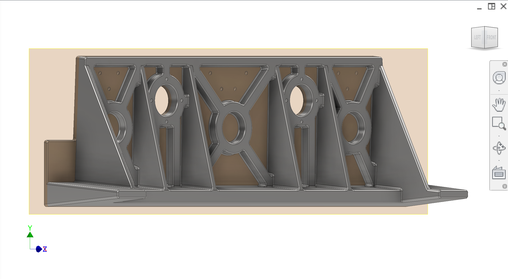

部件 of the 传动 section. Main structural plate that supports shaft mounts and linear bearings and preserves alignment under compression loads and jam cases.
简介
This plate mounts onto the frame rails and supports the 35 mm shaft guidance and linear bearing mounts for the yoke. It strongly influences shaft parallelism, binding risk, and alignment between extraction and collection 削皮器. Two candidate architectures exist: a sand-cast + post-machined plate and a welded + stress-relieved + machined plate.
颜色说明与部件
Key components and intent (colours may vary across figures).
颜色
部件
—
传动安装板 — supports shaft mounts and linear bearing mounts; must be stiff and alignment-repeatable.
—
Bearing mount pads — machined regions on the back face (negative-Z) where linear bearing mounts attach; flatness required.
—
Bottom flange — L-bracket style flange used for bolting to rails/cross-members; locating via dowels is TBD.
图示
Cast bearing-mount plate: pre-machining vs post-machining states, parting line / split surface, and machined bearing pad context. See also 传动 main gallery.






图 1. 机加工前（铸造轴承安装板）。
1 / 6
建议补充图示（便于承包商理解）
补充图示: Welded L-plate alternative — vs cast route; gusset layout and weld sequence.
补充图示: Linear bearing pad flatness — tolerance callouts and inspection fixture concept.
补充图示: Bottom flange to frame — bolt/dowel scheme at rail/cross-member junction.
Primary requirement — Maintain shaft parallelism and bearing alignment so the yoke does not bind, even under washdown contamination and asymmetric/jam loading.
Two architectures — (A) Sand-cast + post-machined for stiffness/robustness, and (B) welded steel (two waterjet-cut plates welded into an L + triangular gussets) followed by stress relief and machining.
Hygiene surfaces — The plate front face is exposed to cleaning spray/juice; surfaces near pulp/juice should be cleanable (target roughness concept: ~Ra 0.8 μm on key surfaces).
已知问题与风险
Distortion — Welded option may require stress relief (oven) and machining to avoid warping and loss of alignment.
Casting quality — Cast option must consider surface quality, rib thickness, and shrink/porosity risk; requires coordination with casting vendor.
All locating/fastener features TBD — Dowel scheme, bolt pattern, and shim strategy are not finalized and must be proposed for repeatable rebuilds.
DFM 与制造（中国）
Cast design notes (current intent) — Minimum wall thickness ~8 mm; draft angles ~3° on ribs; drill dimples/features included for post-cast machining setups; parting surface is on the back (negative-Z) face with ribs.
Machining operations — Post-machine top and bottom mounting faces flat; machine hygiene-facing inner surfaces; machine bearing mount pads on back face; machine bottom flange interfaces for bolt-up.
Welded design notes (current intent) — Two waterjet plates welded into L; add triangular gussets; stress relieve then machine critical faces/pads.
承包商问题
Recommend whether cast+machined or welded+stress-relieved is the best path in China for stiffness, repeatability, surface quality, and lead time. Provide trade-offs.
Propose the dowel/bolt/shim scheme to mount this plate to the frame rails for repeatable seasonal rebuilds (align → bolt → drill/ream → dowel workflow acceptable).
Define the machining/inspection plan to guarantee shaft/bearing alignment (datums, flatness/parallelism targets, and practical checks).
Recommend materials/finishes for washdown exposure and hygiene surfaces.
接口
Input: Forces/moments from yoke/shafts and jam cases react into this plate through shaft mounts and bearing mounts.
Output: Reactions into the frame rails and cross-members; maintains alignment for extraction/collection peeler engagement.
Mount: Bolts (and planned dowels) into frame rails; adjustable/shimmable as needed to achieve alignment.
接口与公差
已知接口与公差。链接指向相关子系统。
部件
接口 / 公差
相关
传动安装板
Mounts to frame rails; dowel/bolt/shim strategy TBD; alignment-critical